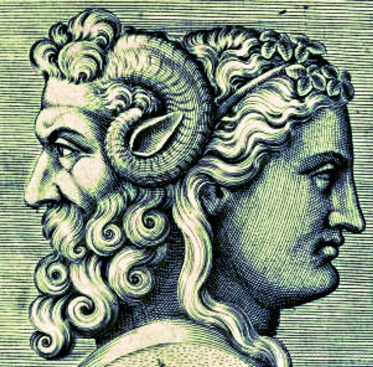

THE GODS OF ANCIENT ROME
MAJOR GODS
AURORA. The Goddess of Dawn
BACCHUS. The God of Wine
BELLONA. The Goddess of War
CAELUS. The Primal God of the Sky, theology, iconography, and literature
CERES. The Goddess of Agriculture
CUPID. The God of Love
DIANA. The Goddess of Hunting
FAUNA. The Goddess of Animals
FAUNUS. The God of the forest, fields, and plains
FLORA. The Goddess of Flowers and Spring
FORTUNA. The Goddess of Fortune
JANUS. The God of Doors and beginnings and endings
JUNO. The Goddess of Marriage
JUPITER. The King of the Gods and the God of the sky and rain
MARS. The God of War
MERCURY. The Messenger of the Gods and God of Commerce and Finance
MINERVA. The Goddess of Wisdom, the City, Education, Science
NEPTUNE. The God of the Sea
PLUTO. The God of the Underworld
PROSERPINA. The Goddess of Fertility and Queen of the Dead
SATURN. The God of Harvest and Agriculture
SOL INVICTUS. The Sun God
SPES. The Goddess of Hope
TERRA. The Goddess of the Earth
VENUS. The Goddess of Love and Beauty
VERITAS. The Goddess of Truth
VESTA. The Goddess of the Hearth and the Roman state
VULCAN. The God of Fire, the Forge and Blacksmiths
MINOR GODS
Abundantia
Aesculapius
Bubona
Candelifera
Carmenta
Clementia
Cloacina
Concordia
Cybele
Deverra
Discordia
Edesia
Epona
Fabulinus
Fama
Felicitas
Fides
Hercules
Hespera
Hippona
Honos
Invidia
Iris
Justitia
Juventas
Libertas
Libitina
Luna
Miseria
Mithras
Muta
Necessita
Nemesis
Opis
Pax
Pietas
Pomona
Portunes
Sancus
Somnus
Sors
Tempestes
Tranquilitas
Trivia
Victoria
Voluptas
Volturnus
More information